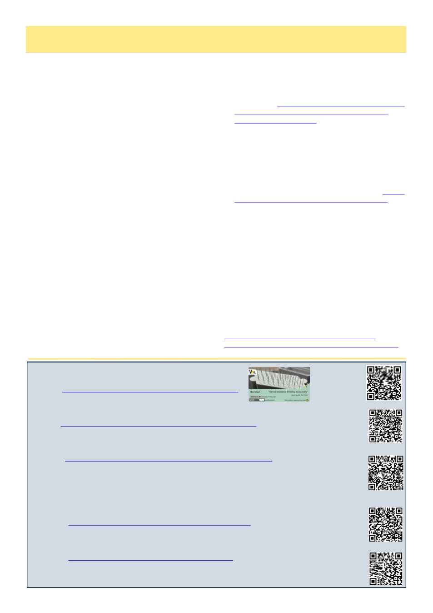

18
Australian Bee Journal
WEBCASTS:
Victorian Apiarists Association
May 7th – Paul Roder – “Varroa resistance breeding in Australia”
PODCASTS:
Two Bees in a Podcast:
April 7th: “Understanding Honey and Botulism with Dr Joshua Jakum”
Amy Vu and Dr. Jamie Ellis are joined by Dr. Joshua Jakum, MD, a pediatrician and an Eastern
Apicultural Society Master Beekeeper, to discuss honey and its connection to botulism.
April 23rd: “Viral Infections of Honey Bee Queens with Dr Leonard Foster”
Amy Vu and Dr. Jamie Ellis are joined by Dr. Leonard Foster, a Professor in Biochemistry and
Molecular Biology, Faculty of Medicine, as well as the director of the Life Sciences Institute at the
University of British Columbia. They discuss elevated virus infections in honey bee queens and what
that means for colonies.
Beekeeping Today Podcast:
April 13th – “Varroa Management Guide Update with Dewey Caron”
A wide-ranging discussion on Varroa management, beekeeping education, and the evolving work of
the Honey Bee Health Coalition.
April 27th – “Queen Biology and Quality with Dr David Tarpy”
Challenging a common oversimplification: the queen is not just an "egg-laying machine," but part
of a dynamic, cooperative system shaped by both biology and worker perception.
Prophylactics, cont’d
entering the heavy concentration of feed lots reduced
morbidity by 80-90%. In fact NSW DPI explicitly rec-
ommends cattle likely to go into feedlots be vaccinat-
ed.7 This isn’t just a “vaccination: good” scenario, cat-
tle that are not bound for high risk concentration envi-
ronments do not typically receive this preventative
treatment. This is a directly analogous situation. Like
with bees, blanket treating would drive up costs and
lead to resistant strains of the disease.
Prior to resistant strains of mites emerging I recom-
mended counting back ten weeks from when you
planned to put honey supers on and putting in Apistan
for those last ten weeks of winter including almonds.
Now we really don’t want these resistant strains, so I
would recommend having slow-release oxalic in.
When your hives are not in a high-risk situation, it
remains true that treating prophylactically is just a
waste of money and time, needless contamination and
resistance building. If a treatment isn’t timed to reduce
the total number of treatments you have to do in a year,
you really shouldn’t do it.
But if you’re in a specific high-risk situation where
not protecting your hives stands to set you back against
varroa for the whole upcoming season – or especially
poses the most overwhelming risk to get mites if you
don’t have them yet, there’s no scientific or logical ar-
gument why you would not want to protect your hives.
Do you really trust that every one of your numerous
anonymous industry partners has been practicing safe
and responsible varroa management and is perfectly
safe to promiscuously interchange drift with?
References
1 Taylor, M. and Goodwin, M. (2021). Control of Var-
roa: A Guide for New Zealand Beekeepers. New Zea-
land Ministry for Primary Industries, Wellington.
2 Honey Bee Health Coalition. Tools for Varroa Man-
agement: A Guide to Effective Varroa Sampling &
Control. 8th ed. Keystone Policy Center; 2022.
Available at: https://honeybeehealthcoalition.org/wp-
content/uploads/2022/08/HBHC-Guide_Varroa-
3 Jack CJ, Ellis JD. Integrated pest management control
of Varroa destructor (Acari: Varroidae), the most
damaging pest of Apis mellifera L. (Hymenoptera:
Apidae) colonies. J Insect Sci. 2021;21(5):6.
doi:10.1093/jisesa/ieab054
4 Oliver R. Randy's Varroa Model. ScientificBeekeep-
ing.com.
2026,
February
22nd.
scientificbeekeeping.com/randys-varroa-model/
5 Cusack PMV. 2004. Effect of mass medication with
antibiotics at feedlot entry on the health and growth
rate of cattle destined for the Australian domestic
market. Australian Veterinary Journal 82: 154–156.
6 Van Donkersgoed J. Meta-analysis of field trials of
antimicrobial mass medication for prophylaxis of
bovine respiratory disease in feedlot cattle. Can Vet
J. 1992 Dec;33(12):786-95. PMID: 17424131;
PMCID: PMC1481390.
7 NSW Department of Primary Industries and Re-
gional Development. Bovine Respiratory Disease
(BRD) or Shipping Fever. NSW Government [Internet].
2025 October [cited 2026 April 21]. Available from:
https://www.nsw.gov.au/regional-and-primary-
industries/livestock/health-diseases/bovine-respiratory
(Continued from page 17)